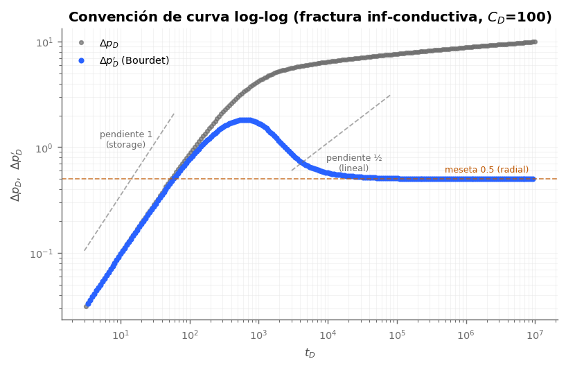
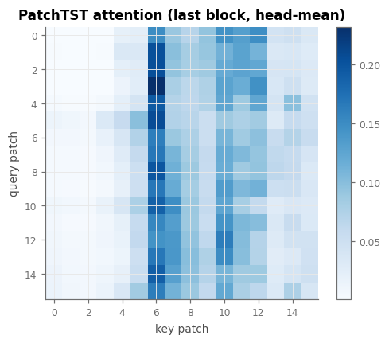
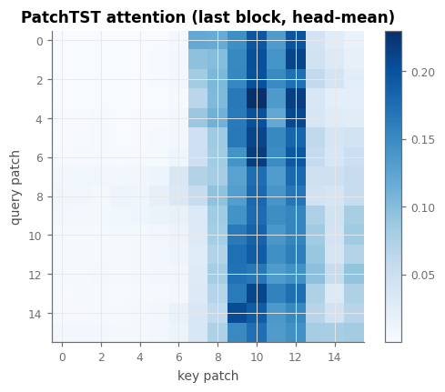
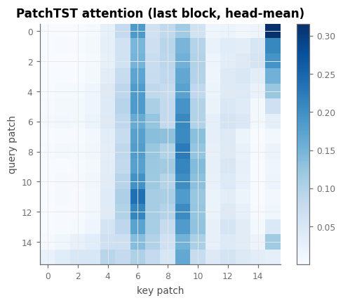
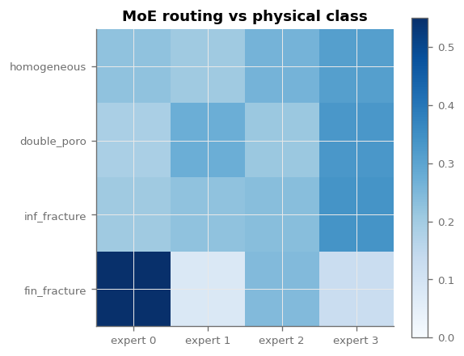
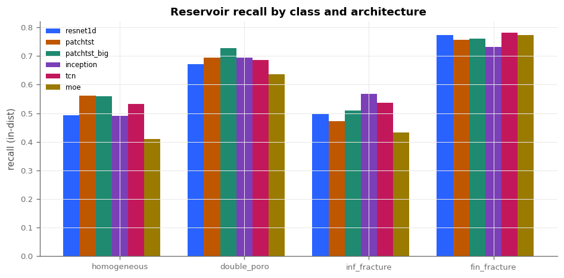

Guía de estilos para los informes de resultados
Estilo editorial tipo Distill: columna de lectura estrecha, serifa para la prosa, sans para datos y cromo, blanco generoso y color con disciplina — el color marca significado, no decora.
Tabla de contenido
Todo informe lleva su TOC autogenerado de los h2/h3 (el bloque de
arriba se construye con ~20 líneas de JS, sin librerías). En pantallas muy anchas
flota como columna izquierda fija con scroll-spy: la sección visible se
marca en azul; en pantallas normales es un bloque tras el byline.
Paleta y roles
Casi monocromo editorial con dos acentos de significado fijo. La regla de oro: el naranja es caro — se reserva para el dato que el lector debe recordar (la métrica héroe, el mejor valor de una tabla, el hallazgo). Si todo es naranja, nada lo es.
Modo oscuro
El tema sigue la preferencia del sistema (prefers-color-scheme) y se
puede forzar con el botón del masthead (persiste en localStorage). En
oscuro, los acentos suben de luminancia (azul #7DA2FF, naranja
#FF9248) para mantener el contraste sobre papel #14161A, y
las figuras raster de matplotlib (fondo blanco) se atenúan con un filtro suave. Todos
los componentes usan variables por rol, así que ningún informe necesita CSS propio
para soportar ambos modos.
Color de datos (gráficas)
Los dos acentos editoriales no bastan para una gráfica con varias curvas. Para eso existe el ciclo categórico de 8 — empieza por los acentos y sigue con tonos separados en matiz, legibles en ambos modos:
Muchas series: el ciclo en orden
Hasta 8 series (las 6 arquitecturas del banco caben), siempre en el mismo orden — así "azul = primera serie" se vuelve convención entre figuras.
Muchas columnas: highlight + context
Más de 8 categorías nunca reciben un color por categoría. Un histograma con muchas columnas usa el patrón highlight + context: todo en gris apagado y SOLO la barra (o las 2-3 barras) de las que habla el texto en color. Si las categorías tienen orden natural, alternativa: escala secuencial mono-matiz azul.
--data-muted), el dato en naranja. El lector ve la historia
sin descifrar una leyenda de 17 colores.Heatmaps: un solo secuencial
Matrices de confusión, mapas de atención y enrutamiento del MoE usan SIEMPRE el
mismo secuencial mono-matiz papel→azul (Blues, fijado en
el .mplstyle como image.cmap). Nada de viridis/jet: un solo
matiz hace comparables las intensidades entre figuras. La celda que se discute en el
texto se marca con borde naranja (highlight + context aplicado a heatmaps).
Scatter de paridad e incertidumbre
Para predicho-vs-real por parámetro: identidad en gris discontinuo, puntos azules
con alpha 0.25, una faceta por parámetro, y la banda ±2σ
del modelo (incertidumbre heterocedástica) como sombreado azul al 15%. Para curvas de
entrenamiento con varias semillas: línea = media, sombreado min-max entre
semillas del mismo color al 15% — nunca una línea por semilla.
Figuras matplotlib on-brand
Las figuras de los scripts usan docs/assets/deep_pta.mplstyle, que fija
el mismo ciclo de 8 colores, el secuencial de heatmaps, la sans y la rejilla fina:
import matplotlib.pyplot as plt
plt.style.use("docs/assets/deep_pta.mplstyle")La figura insignia: curva log-log
La gráfica del dominio — Δp y derivada de Bourdet en log-log — tiene convención fija: Δp en gris tinta (contexto), Δp′ en azul acento (la derivada es la protagonista del diagnóstico), datos como puntos y modelo como línea, rejilla de décadas, y las pendientes de régimen anotadas en gris discontinuo (la meseta radial 0.5 puede ir en naranja si es el punto del argumento). Generada con el motor real:

debug/dbg_make_style_figures.py.Carrusel de imágenes
Cuando hay varias figuras hermanas (los 4 mapas de atención por clase, las matrices de confusión de cada arquitectura), van en un carrusel con scroll-snap — sin librerías, degrada a scroll lateral con el dedo/trackpad:




Ecuaciones (KaTeX)
La matemática se renderiza con KaTeX (CDN + auto-render; funciona
en GitHub Pages). Inline con \( ... \) y en bloque con
$$ ... $$ dentro de .equation, con número a la derecha:
La separación inline también funciona: en flujo lineal \( n = \tfrac12 \) y la separación vale \( \log_{10} 2 \approx 0.301 \).
Tipografía
La prosa va en Source Serif 4 (fallback Georgia) a 17px con
interlínea 1.65 sobre una medida de ~70 caracteres. Los títulos de sección, tablas,
leyendas y todo lo que sea "interfaz" van en Source Sans 3. El código
y los números de archivo en JetBrains Mono. Los números en tablas usan
tabular-nums para que las columnas alineen.
Un sub-encabezado se ve así
Y un párrafo con un enlace azul, un
identificador_de_codigo y un énfasis en negrita. Las
fórmulas cortas van inline: la separación vale log₁₀(2) ≈ 0.301 en flujo lineal.
Componentes
Métricas clave
El bloque de apertura de todo informe: 3-5 números, el héroe en naranja.
Bloque de hallazgo
Nota al margen
El cuerpo del argumento sigue limpio mientras el contexto secundario (definiciones, salvedades metodológicas, enlaces al código) vive en notas al margen que no interrumpen la lectura.
Flujogramas
Todo workflow del código se explica con un flujograma Mermaid (render en el navegador, funciona en GitHub Pages). Nodos blancos con borde gris, flechas grises, y el nodo o arista que importa en azul; resultados/decisiones clave en naranja. Demo con el pipeline real del proyecto:
flowchart LR A["Motor analítico
Laplace + Stehfest
engine/"] B["Capa de realismo
ruido, deriva, truncado
data/realism.py"] C["Derivada de Bourdet
ventana L variable
data/bourdet.py"] D["Representación 5 canales
p, p', t, sep, slope
data/representation.py"] E["Banco de arquitecturas
6 modelos, condiciones idénticas
models/"] F["Métricas balanceadas
in-dist + extrapolación
train/train_cnn.py"] A --> B --> C --> D --> E --> F style D stroke:#2962FF,stroke-width:2.5px style F stroke:#BF5700,stroke-width:2.5px
wide.Tabla comparativa
Las tablas de ablation son el corazón de los informes: encabezado sans en mayúsculas con regla de tinta, filas con reglas finas, hover azul tenue, la fila ganadora con fondo naranja tenue y el mejor valor por columna en naranja.
| Arquitectura | Params | Bal-acc yac | MAE | Extrap |
|---|---|---|---|---|
| PatchTST-grande | 6.35 M | 0.639 | 0.322 | 0.526 |
| TCN | 0.27 M | 0.634 | 0.378 | 0.578 |
| ResNet-1D | 0.24 M | 0.610 | 0.428 | 0.582 |
| MoE | 0.12 M | 0.563 | 0.544 | 0.470 |
Figuras

wide que rompe la medida de lectura.Código
.venv/bin/python debug/dbg_train_ablation.py \
--name bench_tcn_s0 --arch tcn --channels sep,slopeReglas de redacción
Heredadas de la disciplina de métricas del proyecto:
① Siempre balanced accuracy, nunca accuracy cruda. ② In-distribution
y extrapolación se reportan siempre juntas. ③ Los resultados negativos
se publican (el MoE último también es hallazgo). ④ Cada número de cabecera enlaza a su
fila JSON en outputs/ablation/. ⑤ Todo workflow del código lleva su
flujograma Mermaid. ⑥ Prosa en español, términos técnicos en inglés — la misma
convención que la bitácora.